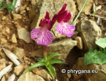

")
")
| Phrygana: la Nature en Crète principalement, mais aussi d'ailleurs ... |
|  |
|
|
| Anacamptis papilionacea | Bostrichus capucinus | Cylindromyia brassicaria |
| Espèces: 1189 --- Faune: 486 -- Flora: 682 -- Galles (Bacteria): 2 -- Champignons: 18 -- Lichens: 1 | |||||
| Nouveautés | |||||
| Flora: | Stachytarpheta jamaicensis | Flora: | Cerastium glomeratum | Fauna: | Liriomyza blechi |
| Flora: | Bolboschoenus maritimus | Flora: | Parkinsonia aculeata | Flora: | Atriplex prostrata |
| Flora: | Geranium dissectum | Flora: | Cyperus rotundus | Flora: | Rostraria cristata |
| 06 mai 2021 |